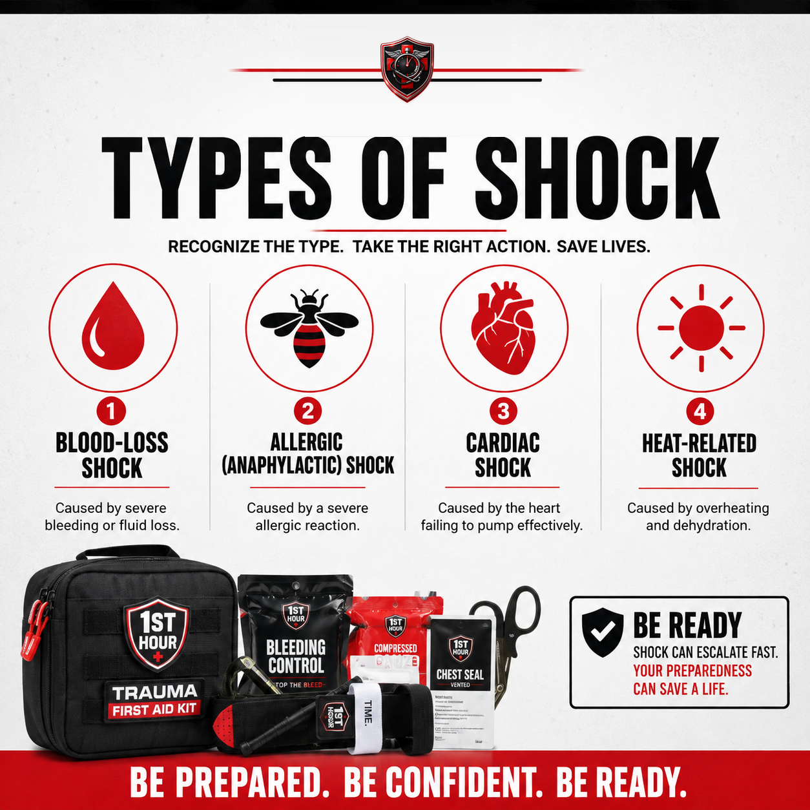
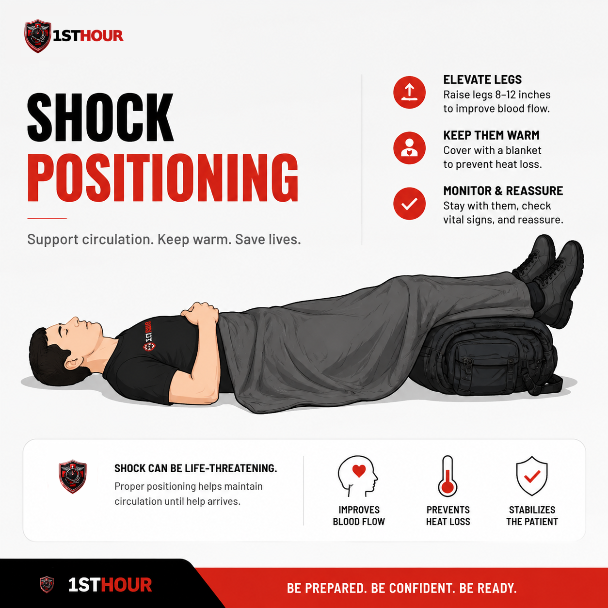
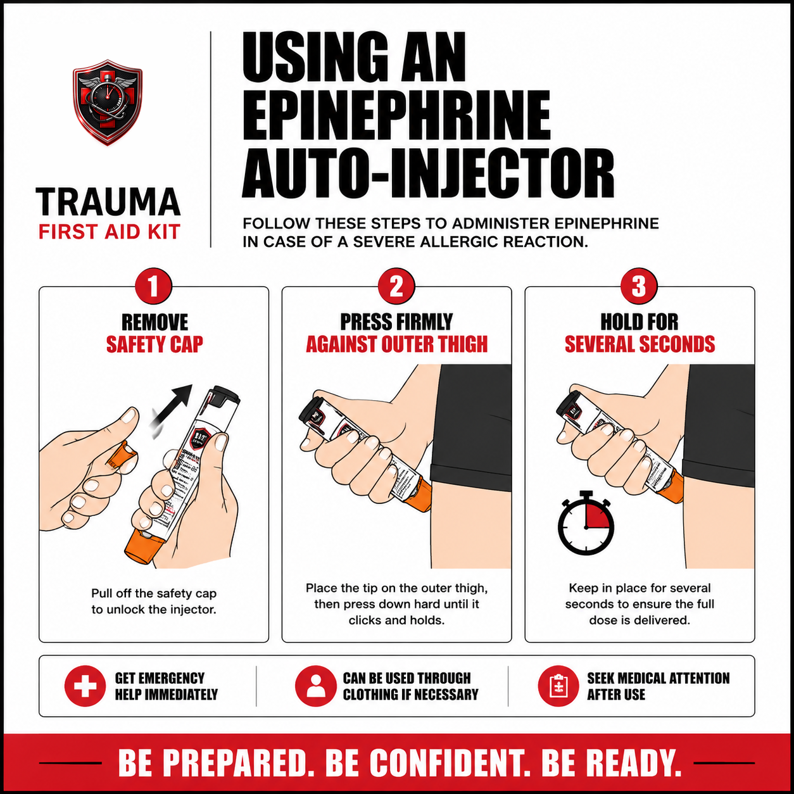

Shock Management
Shock isn't "being scared." It's the body failing to deliver enough blood to its own organs — and it can follow a bleed, a burn, an allergic reaction, or a heart problem just as easily. Here's how to recognize it and respond, no matter what caused it.
1. Why the First Hour Matters
Shock is not a symptom you wait out. It's a progressive failure of the circulatory system — and left untreated, it kills on its own timeline, independent of whatever caused it in the first place. That's the single most important thing to understand about this protocol: a person can survive the bleed, the burn, or the allergic reaction that started things, and still die from the shock that followed, if it isn't recognized and managed in the same first hour.
This guide is different from most of the others in the 1st Hour library. It isn't built around one injury mechanism. Shock can follow severe bleeding, a major burn, a severe allergic reaction, a heart problem, or dangerous overheating — four very different starting points that converge on the same dangerous end state. If you found this book on its own, or clicked through from another protocol's "if shock symptoms appear" cross-link, this is the deeper treatment: what shock actually is, how to tell the types apart, and exactly what to do about it regardless of cause.
The good news is that the response doesn't require you to diagnose the cause correctly. Whether someone is in shock from blood loss, a bee sting, a heart attack, or a heat emergency, the immediate first-aid actions — positioning, warmth, getting professional help moving, and not giving food or water — are almost identical. Only one branch of this protocol (anaphylaxis, Section 6) adds a cause-specific step. Everything else in this book applies no matter which of the four types you're looking at.
2. What Shock Actually Is
In everyday language, "shock" means being startled or emotionally rattled. In medicine, it means something much more specific and dangerous: the body's circulatory system failing to deliver enough oxygenated blood to its organs. That's it — that's the whole definition. It has nothing to do with how someone feels emotionally, and everything to do with whether their organs are getting enough blood flow to keep functioning.
This misconception is worth correcting explicitly, because it changes how urgently people react. Someone who looks "shaken up" after a scary event is not automatically "in shock" in the medical sense, and someone who looks calm and is speaking in full sentences can absolutely be in the early stages of true circulatory shock. What matters is the body's actual blood flow and oxygen delivery — not how composed the person appears.
When organs don't get enough blood, they start to fail — first the least essential tissues, then progressively more vital ones, including eventually the brain and heart. Early on, the body compensates: the heart beats faster, blood vessels in the skin and extremities constrict to preserve flow to the core, and breathing speeds up. Those compensations are exactly why the early signs of shock look the way they do (Section 4) — and why shock can look deceptively mild right up until it doesn't.
3. Types of Shock at a Glance
"Shock" isn't one condition with one cause — it's an end state that several very different problems can all lead to. Knowing the broad categories helps you understand what you're looking at, even though (as Section 4 covers) the first-aid response looks nearly the same across all of them.
| Type | What causes it | What's different about it |
|---|---|---|
| Blood-loss (hypovolemic) | Severe bleeding, or significant fluid loss from a large burn | The body simply doesn't have enough blood volume left to circulate — covered in depth in the Severe Bleeding & Burn Injury protocols |
| Allergic (anaphylactic) | A severe allergic reaction to food, medication, an insect sting, or another trigger | Blood vessels suddenly widen and can leak fluid, and the airway can swell — the only type with a specific medication response (Section 6) |
| Cardiac | The heart failing to pump effectively (heart attack, severe arrhythmia, or other heart failure) | The pump itself is the problem, not the blood volume or vessel tone — chest pain, pressure, or known heart history are red flags |
| Heat-related | Severe overheating and dehydration (heat exhaustion progressing toward heat stroke) | Often develops more gradually, and cooling the person is an added priority alongside the standard shock response |

You often won't know for certain which type you're dealing with, and you don't need to in order to start helping — the shared response in Sections 5 and 8 applies regardless. Use the cause, if it's obvious (a wound, a burn, a known allergy, chest pain, a hot environment), mainly to decide whether Section 6's anaphylaxis-specific step applies and what to tell the 911 dispatcher.
4. Recognizing Shock
These signs are shared across all four types in Section 3 — they're what the body does when it's compensating for inadequate blood flow, regardless of why that flow is inadequate. Learn this list as a single checklist, not four separate ones.
Watch for:
- Pale, cool, or clammy skin
- Rapid, weak pulse
- Rapid, shallow breathing
- Confusion, anxiety, or restlessness
- Nausea or vomiting
- Extreme thirst
- Progressive weakness, dizziness, or loss of consciousness
A few signs point toward a specific type and are worth flagging separately, since they change what else you should do:
- Hives, swelling of the face/lips/tongue, throat tightness, or difficulty breathing after a possible allergen exposure — points toward anaphylaxis (Section 6).
- Chest pain or pressure, pain radiating to the arm or jaw, or a known heart condition — points toward cardiac shock; this person needs 911 regardless of how mild it looks.
- Hot, flushed or very dry skin and confusion in a hot environment — points toward heat-related shock, where cooling becomes an added priority (Section 7).
5. The Positioning, Warmth & No-Food-or-Water Protocol
This is the practical core of this book — the sequence to run through for anyone showing signs of shock, regardless of cause. Read it now, in order, so it's automatic if you ever need it.
- Call or have someone call 911 immediately if that hasn't already happened. Shock is close to an automatic "call 911" condition on its own — see Section 9. If you're alone, put the phone on speaker and keep working while you talk to the dispatcher.
- Keep treating whatever's causing it. Shock will not improve while the underlying problem goes unaddressed — continued bleeding, an unflushed chemical burn, or an ongoing allergic reaction all need their own treatment (see Section 7's cross-references) in parallel with the steps below, not instead of them.
- Lay the person flat — but check for exceptions before you consider raising the legs. Do not elevate the legs if you suspect a spinal injury, a leg injury, or if the person is having any difficulty breathing — in any of those cases, leave them flat (or in whatever position is safest and most comfortable, including sitting up if lying flat makes breathing harder) and skip straight to Step 4. If none of those apply, you may gently raise the legs about 6–12 inches; current first aid guidance notes this can help blood return to the body's core, but the effect is brief and not required, so don't delay warmth or bleeding/injury control to do it, and stop immediately if it causes pain or shortness of breath.
- Keep them warm. Insulate from the ground underneath them (a jacket, blanket, or even a car seat cover) as well as covering them on top — losing body heat through contact with cold ground is just as significant as losing it to open air, and worsens shock either way.
- Do not give food or water, even if they ask for it or seem alert enough to swallow safely. Two reasons: it can cause vomiting, which is dangerous if their level of consciousness drops, and if surgery turns out to be necessary, having eaten or had anything to drink complicates anesthesia.
- Loosen any tight clothing around the neck, chest, and waist to support breathing and circulation, but don't remove more clothing than necessary — you're trying to help warmth and breathing at the same time, not trade one for the other.
- Keep talking to them and stay close. Reassurance matters, but so does tracking their responsiveness — move to Section 8 for exactly what to monitor and how often while you wait.
- If they become unresponsive and are not breathing normally, begin CPR if you're trained, regardless of what caused the shock. If you're not trained, the 911 dispatcher can talk you through it in real time — say so on the call.

6. Anaphylactic Shock & Epinephrine Auto-Injectors
Anaphylaxis is the one type of shock in this book with a specific medication response, and it can move from first symptoms to life-threatening within minutes — faster than most other causes of shock. Recognizing it quickly and acting without hesitation matters more here than almost anywhere else in this library.
Recognizing an allergic reaction progressing toward shock:
- Hives or widespread skin flushing
- Swelling of the face, lips, tongue, or throat
- Difficulty breathing, wheezing, or a feeling of throat tightness
- Rapid pulse, dizziness, or fainting
- Nausea, vomiting, or abdominal cramping following a known or suspected exposure (food, medication, insect sting, or other allergen)
If an epinephrine auto-injector is available:
- Call 911 first, or have someone else call while you prepare the injector. Epinephrine buys time — it does not replace emergency care.
- Remove the safety cap to unlock the injector, following the specific device's markings (styles vary slightly by brand).
- Press firmly against the outer thigh, through clothing if necessary — you don't need to expose skin first.
- Hold in place for several seconds to ensure the full dose is delivered, per the device's own instructions.
- Call 911 immediately if you haven't already, even if symptoms improve. Epinephrine can wear off before the reaction has fully resolved, and symptoms can return — sometimes worse than the first episode. Everyone who receives epinephrine needs emergency evaluation, no exceptions.
- Keep monitoring breathing and consciousness per Section 8 while you wait, and be ready to use a second auto-injector (if a second one is available and symptoms haven't meaningfully improved after 5 to 15 minutes) or begin CPR if breathing stops and you're trained.

If no auto-injector is available:
Call 911 immediately and tell the dispatcher you suspect anaphylaxis — this is one of the clearest cases where dispatchers can help arrange the fastest possible epinephrine delivery via responding EMS. While you wait, follow the standard shock protocol in Section 5: positioning, warmth, no food or water. If the person has any difficulty breathing, keep them sitting upright rather than flat, since lying flat can make breathing harder when the airway is involved — this is one of the specific "breathing difficulty" exceptions Section 5 already tells you to watch for.
7. Special Situations
Pediatric shock
Children can look stable for longer than adults because their bodies compensate more aggressively — and then decompensate much faster once that compensation fails. Don't take a child's calm appearance as reassurance the way you might with an adult; treat any of the signs in Section 4 in a child as more urgent, not less, and don't wait for the situation to look as severe as it would in an adult before calling 911.
Multiple casualties
If more than one person needs help and you're the only capable responder, prioritize by both severity and correctability: someone with an actively treatable cause (uncontrolled bleeding, an unadministered epinephrine dose) generally comes before someone already stable on the ground with warmth and positioning in place. See the Car Accident Trauma protocol's triage approach for a fuller walkthrough of this decision when several people are hurt in one incident.
Shock following a specific injury
This book covers the shock response itself in depth; it doesn't re-teach how to control the underlying cause. If shock followed one of these, the linked protocol covers what this book doesn't:
- Severe bleeding: see Severe Bleeding & Hemorrhage Control for tourniquet application and wound packing — keep that bleeding controlled while you run this book's Section 5.
- A burn: see Burn Injury (Thermal, Chemical, Electrical) for cooling, flushing, and covering technique — continue that care alongside this book's shock response.
- Choking that's since been cleared: see the Choking / Airway Obstruction protocol for what to watch for afterward, since a person can remain shaken and in early shock even once an airway obstruction is resolved.
8. Monitoring & Reassessment While Waiting for EMS
Once the Section 5 protocol is in place, your job shifts to watching for change — shock can worsen quickly, and catching that early is exactly what EMS needs to hear about on arrival.
Check every few minutes:
- Breathing — rate and whether it's becoming more labored, shallow, or irregular.
- Pulse — whether it's getting faster, weaker, or harder to find at the wrist (a pulse that becomes hard to feel at the wrist but is still present at the neck is a sign of worsening shock).
- Level of consciousness — are they becoming more confused, less responsive to their name or a light shake of the shoulder, or harder to keep awake?
- Skin color and temperature — is pale/cool/clammy skin spreading or intensifying?
When EMS arrives, give them a fast, specific handoff: what you believe caused it, when symptoms started, what you did (including exact times for anything like a tourniquet or an epinephrine dose), and how the person's condition has changed since you started monitoring. That last part — the trend, not just the current snapshot — is often the most clinically useful thing you can offer.
9. When to Call 911
This isn't a judgment call the way some other decisions in this library are (for example, a minor broken bone might reasonably go to urgent care instead of by ambulance). Shock is different: it can deteriorate quickly and unpredictably, EMS can begin treatment — including IV fluids, oxygen, or medication — the moment they arrive rather than after a self-driven trip to a hospital, and a person whose condition worsens en route in a personal vehicle has no one able to intervene the way a trained crew can. Call first, treat while you talk, and don't let how "not that bad" the person looks talk you out of it.
Stay on the line if you can. Dispatchers are trained to walk you through the Section 5 protocol in real time and will tell you exactly what responding units need to know — your location, what you believe caused the shock, and what you've already done.
10. Aftercare & Follow-Up
Once EMS has taken over, your job as a first responder is done — but a few things are worth knowing for afterward.
- Tell EMS everything you observed and did, including the timeline of symptoms and the exact time of anything like an epinephrine dose or a tourniquet application.
- The underlying cause still needs its own medical follow-up. This book treats the shock response — the bleeding, burn, allergic reaction, cardiac event, or heat emergency that caused it needs to be evaluated and treated in its own right, even after the shock itself has stabilized.
- Restock and replace anything used, including a used epinephrine auto-injector, before the kit or the person's personal supply is trusted again.
- It's normal to feel shaken afterward. Responding to a shock emergency is intense, especially when it's not obvious at first how serious it is. Debrief with someone, and talk to a professional if the experience stays with you.
11. Essential Items Checklist
Shock management relies on fewer specialized supplies than some of this library's other protocols — mostly because the response is about positioning, warmth, and monitoring rather than a hands-on intervention. Here's what's genuinely useful to have within reach.
- Emergency/space blanket — Section 5. Insulates from the ground and covers the person; the single most useful item for this specific protocol.
- Non-latex gloves — if you're also treating a wound, burn, or other bleeding cause alongside the shock response, per Section 7's cross-references.
- A personal epinephrine auto-injector, if prescribed — Section 6. Not included in the standard 1st Hour kit; this is a personal, prescription item for someone with a known severe allergy.
- A phone, kept on speaker — Sections 5 & 9. Lets you talk to the 911 dispatcher with both hands free to manage positioning and warmth.
12. Good Samaritan Protections
Every U.S. state has some form of Good Samaritan law protecting people who provide reasonable emergency assistance in good faith — the shock response in this book doesn't change that general picture by state, so it isn't repeated here in full. See the Severe Bleeding & Hemorrhage Control protocol's full state-by-state appendix for the twelve-state grid and the general principle that applies everywhere else. As with every book in this library, that overview is general information, not legal advice — see the disclaimer below.
13. Medical Disclaimer
This guide is for general educational purposes only and does not constitute medical advice, diagnosis, or treatment. It is not a substitute for professional medical care, emergency medical services, or a certified first aid, CPR, or Stop the Bleed course, which we strongly recommend taking in person.
In any real emergency, call 911 (or your local emergency number) immediately. Nothing in this guide should delay that call.
The Good Samaritan law information in Section 12 (and referenced from the Severe Bleeding & Hemorrhage Control protocol) is general information, not legal advice. Laws vary by state, change over time, and may have exceptions not covered here. Consult a licensed attorney in your state for guidance on your specific situation.
1st Hour and its parent company make no warranty, express or implied, regarding outcomes from applying the information in this guide, and disclaim liability for actions taken based on its contents to the fullest extent permitted by law.
Editor's note: this edition reflects content as of August 24, 2026. 1st Hour periodically revises protocol guides as best practices evolve — visit 1sthourprotocols.com/shock-management for the current edition and to re-download the latest PDF.